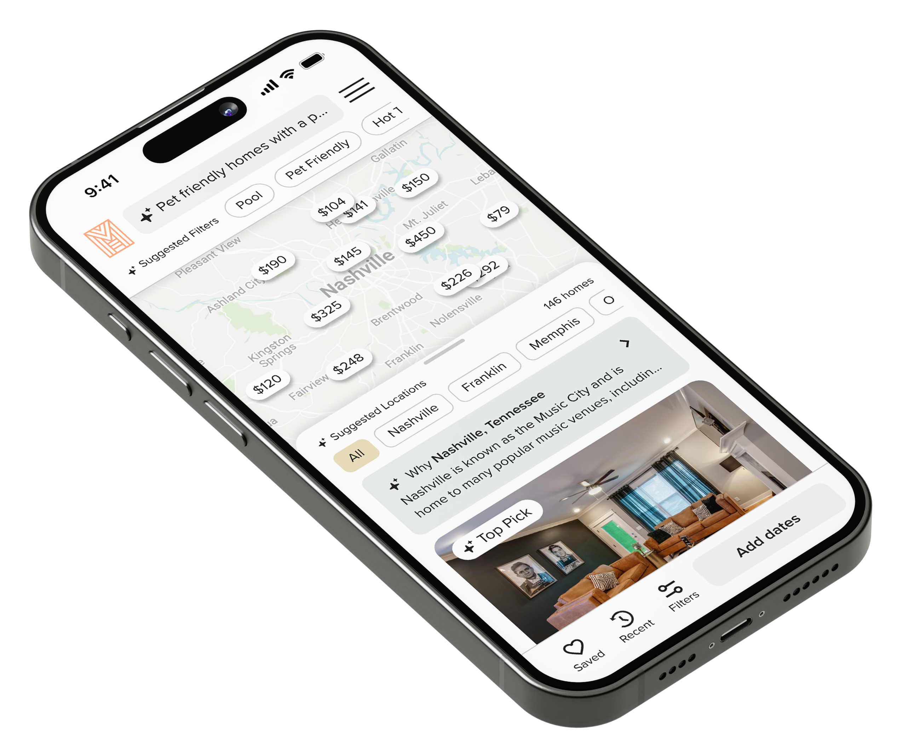
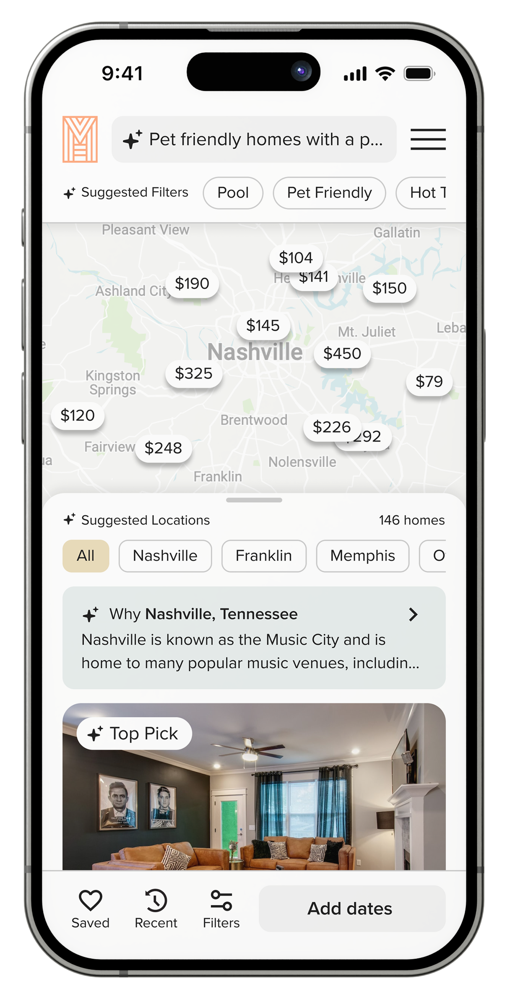
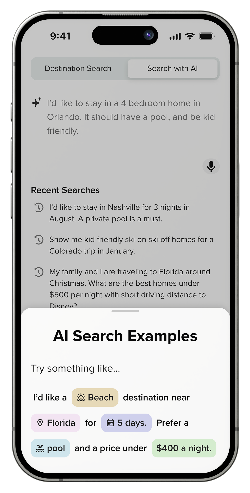
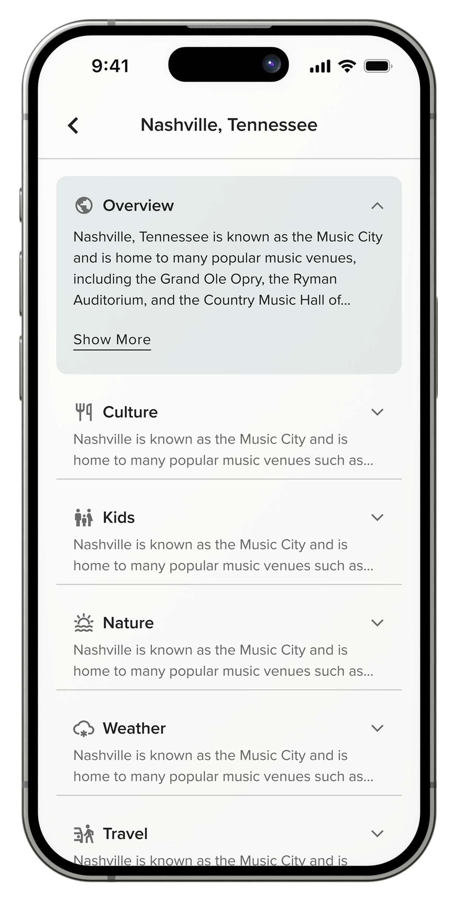
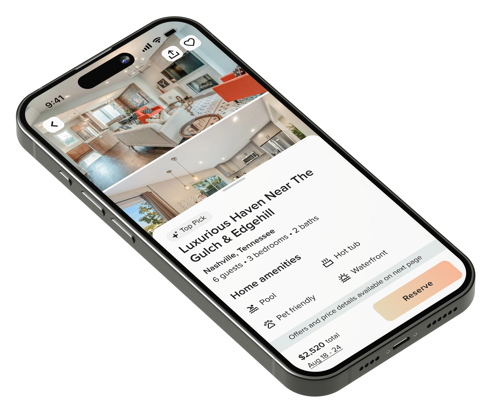
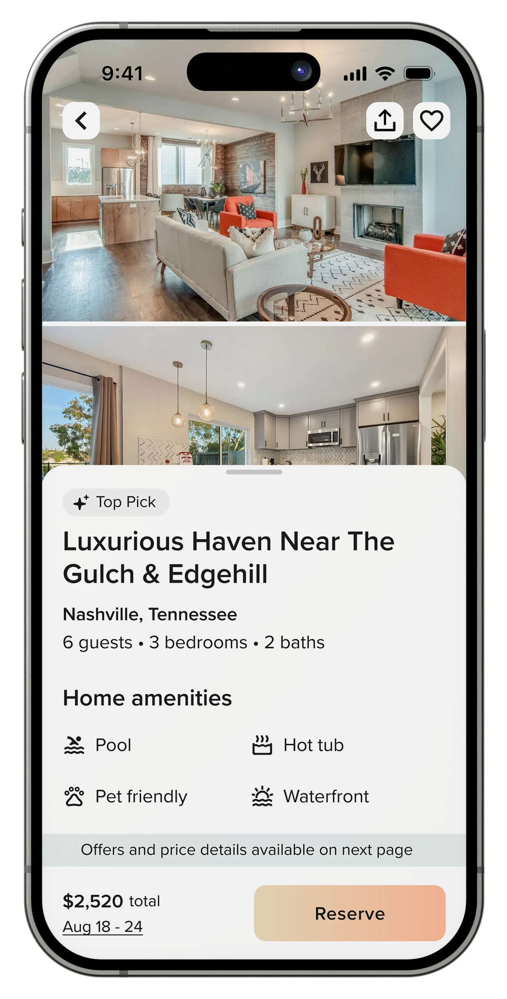

Two stories about AI, conversion, and craft from the booking funnel of Homes & Villas by Marriott Bonvoy.
Dennis VentrelloPrepared for Velocity Black
Introduction
I build AI enabled experiences that drive conversion, and teach others to do the same.
I'm a Product Design Director at Publicis Sapient, embedded with Homes & Villas by Marriott Bonvoy since 2020. I direct design, product, engineering, and data teams through work that helped grow platform revenue 10x. Before that I designed for Amazon and Chewy, and spent six years turning a legacy racing parts manufacturer into a digital first brand.
2012Amazon
2014Chewy
2014Jesel
2020Homes & Villas by Marriott Bonvoy
The next hour
01
Blended AI SearchFirst to market with AI search, without betting the funnel.
02
Booking Funnel RedesignThe end to end rebuild that lifted mobile bookings 80%.
03
QuestionsWherever you want to take them.
Case Study 01 · Homes & Villas by Marriott Bonvoy
Blended AI Search
2023. A small team, a clear mandate, and the first blended AI search experience in travel.

My roleLed ideation and design on a cross functional team of product, design, and engineering leaders.
The situation
Guests don't think in filters.
They think in stories. Traditional search asks them to translate those stories into checkboxes, and the translation loses everything that matters. So guests were doing their real discovery on Google, where a competitor is always one result away.
“Somewhere cozy for a family reunion”“A place with character near great restaurants”
The task
Be first. Break nothing.
In 2023, every travel brand was circling AI. Our mandate was to get there first without harming the core business. Boost brand visibility. Prove technical and financial feasibility. Gather behavioral data. And protect the booking funnel the entire platform depended on. Every decision would be measured against conversion and revenue.
My roleI owned the experience direction, and held every design decision against those guardrails.
The action · First attempt
Like everyone in 2023, we built a chatbot first.
Users hated it, and they told us every round. Chat carried the stigma of canceling subscriptions and pleading for a human. It added steps between the homepage and results. It turned a simple task, destination, dates, search, into a conversation nobody asked for.
The technology wasn't the problem. The pattern was.
The action · The turning point
Chat and search were 800 pixels apart.
While the team iterated on chat, I kept coming back to a simpler observation. A text field at the bottom of the page reads as chat. The same field at the top reads as search. Move it 800 pixels and the mental model flips.
We stopped injecting AI into the funnel and started enhancing the search guests already trusted.

The action · The design
One smart field was feasible. Two honest ones were better.
We could've built a single input that handled both “Paris” and “romantic getaway with Michelin star restaurants.” Car makers have spent a decade merging everything into one smart screen that complicates everything. So we split it. Destination Search stays fast and familiar. AI Search is exploratory and descriptive.
And the tab boundary created natural drop off points that managed costly AI API calls, which made finance as happy as the guests.

The action · Adoption
Nobody reads a prompting tutorial. So we never wrote one.
The search field rotated real example prompts. Guidance broke a good prompt into location, trip type, activities, and home features. Loading screens became trending searches and search tips. And AI suggested filters proved the system understood intent.
For guests still deciding where to go, AI Search returned destination recommendations with real context across culture, kids, nature, weather, and travel. We brought the whole research journey inside the funnel. Guests stopped leaving to compare destinations, and stopped landing on competitor sites while they did it.

Blended AI Search · The result
1st
To market with a blended AI search experience in travel.
0AI searches since launch
0Media impressions
0%Step conversion lift
0%YoY site visits
The learnings
Great AI works the way people think.
The features that won felt like a natural evolution of patterns guests already trusted, not a new behavior to learn. Average prompt length settled at ten words, which told us guests weren't chatting. They were searching, with more to say.
Being first mattered. Being first without breaking anything mattered more.
What happened next
Discovery got better. Conversion didn't.
AI was bringing qualified guests into a booking flow built for a different era. So we rebuilt the funnel, end to end.
Case Study 02 · Homes & Villas by Marriott Bonvoy
Booking Funnel Redesign
Every touchpoint from discovery through confirmation, rebuilt around how guests actually book.

My roleDirected the design, product, engineering, and data teams, leading managers through the full initiative.
The situation
The funnel carried years of neglect and quick fixes.
The issues were obvious to everyone. Booking had once spanned four separate pages. Pricing detail piled up early in the journey. Mobile got a desktop site squeezed onto a phone. We'd just never had the runway for a holistic pass, and incremental fixes kept losing to roadmap math.
This time we committed to all of it.
The task
Rebuild everything, on two principles.
Mobile needed to feel native, not like a website apologizing on a phone. And the funnel needed to be deliberate about what information appears, and when. Two principles, applied to every step from discovery through confirmation.
My roleI set the vision and strategy, then directed managers and leads across design, product, engineering, and data to execute it.
The action · Nearly native
Mobile web that behaves like a native app.
The property page became two swipeable layers. Guests land on photography with key details in a drawer below. Swipe down to immerse in the gallery, swipe up for amenities and booking. No more endless scrolling, no more hunting for photos. Competing with Airbnb's mobile experience was the whole point.

The action · The pricing decision
We removed the pricing breakdown. On purpose.
The total stayed. The line items, taxes, and fees moved to the booking page, replaced by one clear message that full details were a page away. Our theory was that simplicity creates momentum, and that the qualified traffic we'd push deeper would outweigh the bounce we'd add at the end.
Before · Full breakdownAfter · Total plus one message
The action · Holding the line
The booking page got worse before everything got better.
Step conversion to the booking page jumped immediately. Booking page conversion dropped, exactly as modeled, because we were sending browsers deeper than they'd ever gone. Those weeks are where a redesign either holds or unravels.
We'd done the math. We held the line. Total bookings climbed anyway.
The action · The booking page
Every slippery funnel needs a sticky booking page.
We cut the language that didn't earn its place and moved multi factor authentication behind the Pay Now button, so there's no friction before commitment. Then we brought decisions onto the page. Dates, guest count, points, and offers are editable in place, and the gallery carries through for one last look.
The only remaining action is to book.
The action · Influencing behavior
The right nudge at the moment of decision.
Property pages earned labels like Top Pick and Going fast, tied to real booking velocity and availability. The calendar prompted at the exact moment guests were choosing dates. Gentle pressure, never manufactured scarcity. Bookings rose when urgency was present, and stays ran longer when the incentive was visible in context.
Calendar promptAdd 4 nights for a weekly discount
Loyalty nudge5 more nights until your next Membership Tier
Property labelsTop PickGoing fast
Booking Funnel · The result
0%
Mobile step conversion, property page to booking page. Desktop followed at 91%.
0%More daily mobile bookings
0%Overall mobile conversion
0%Saved homes, mobile
0%Faster page loads
The learnings
Sequencing was the strategy.
Each piece de-risked the next. AI Search brought qualified guests, the disclosure changes moved them deeper, and the booking page held them there. None of it works in a different order.
And the scariest metric in the middle, the booking page dip we designed for, was the proof the model was working.
One more thing
This presentation is built on your design system.
Before writing a single slide, I pulled the tokens from velocity.black. The ground is #0a0a0a. The text steps through the same four opacities of white. The eyebrows are mono, tracked at 2px. The gradient belongs to you. And since Twenty Four Sans is yours alone, commissioned from FROST, Hanken Grotesk is standing in today.
A luxury travel brand where discovery should feel like inspiration and booking should feel effortless. Members who think in stories, not filters. A concierge that answers the way people ask.
I've spent six years making an aspirational travel platform convert like a native app while competing with a category giant. That's the job as I read it. I'd love to hear how you see it.